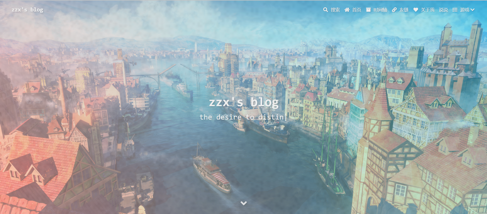
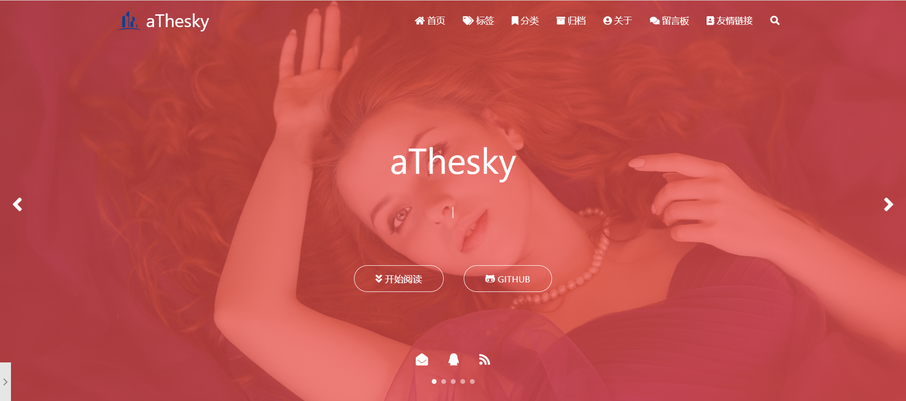

Welcome to Hexo! This is your very first post. Check documentation for more info. If you get any problems when using Hexo, you can find the answer in troubleshooting or you can ask me on GitHub.
一、安装环境
在安装 hexo 前需要准备 node.js 环境，在CMD下使用 node -v 可以查看 node 的版本信息，在node.js官网 https://nodejs.org/en/ 中选择 LTS 下载安装即可。之后需要安装 cnpm 环境，安装命令为 npm install -g cnpm –registry=https://registry.npm.taobao.org，使用 cnpm -v 命令查看版本，环境搭建完成后就可以开始 hexo 博客的搭建步骤了，如下所示：
安装 hexo：
cnpm install -g hexo-cli；创建博客文件夹：如
E:/codecat/blog；切换路径：
cd E:/codecat/blog；初始化 hexo：
hexo init；启动 hexo 服务：
hexo s；- 启动后可以在本地的 4000 端口访问查看
部署到远端(Github)
安装插件：
cnpm install --save hexo-deployer-git；配置
_config.yml文件，其中IAmLuwenyang.github.io.git为Github创建的repository名称；1
2
3
4
5
6# Deployment
## Docs: https://hexo.io/docs/deployment.html
deploy:
type: 'git'
repo: https://github.com/IAmLuwenyang/IAmLuwenyang.github.io.git
branch: master部署到Github中，
hexo d。
二、更换hexo主题
推荐几款主题，喜欢的可以去对应的Github网址上访问下载。
butterfly主题

matery主题，一个基于材料设计和响应式设计而成的全面、美观的Hexo主题，https://github.com/blinkfox/hexo-theme-matery ；

yilia主题，一个简洁优雅的hexo主题，https://github.com/litten/hexo-theme-yilia ;
下载主题，以yilia为例，在命令行输入 git clone https://github.com/blinkfox/hexo-theme-matery.git themes/yilia下载，完成后需要修改 _config.yml 中的配置，如 theme: matery，完成后执行如下命令：
1 | hexo clean |
三、快速开始
如何写另一篇博客，需要在命令行输入：
1 | hexo new "SpringBoot的魅力" |
更多详细信息访问：https://hexo.io/docs/writing.html 。
注意事项
搭建过程中所有的命令行操作都在 Git Bash 中完成，因此需要提前下载安装 Git 环境。